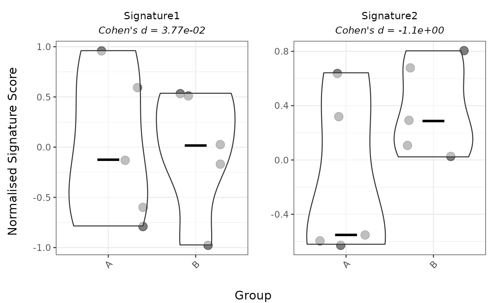
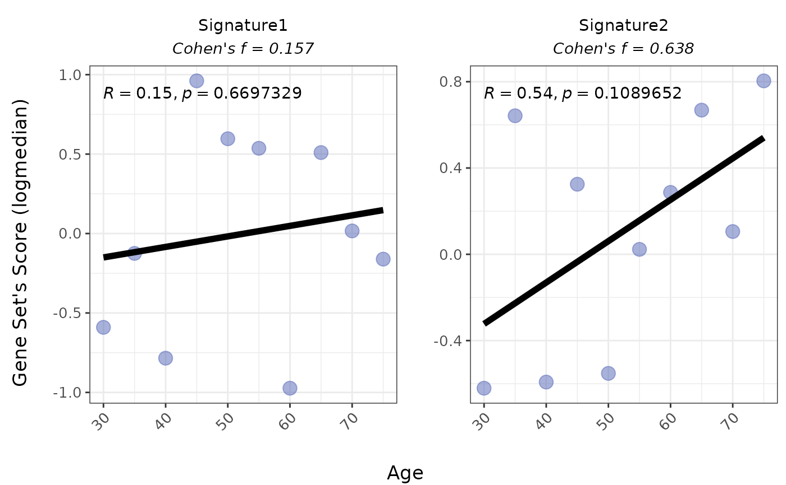
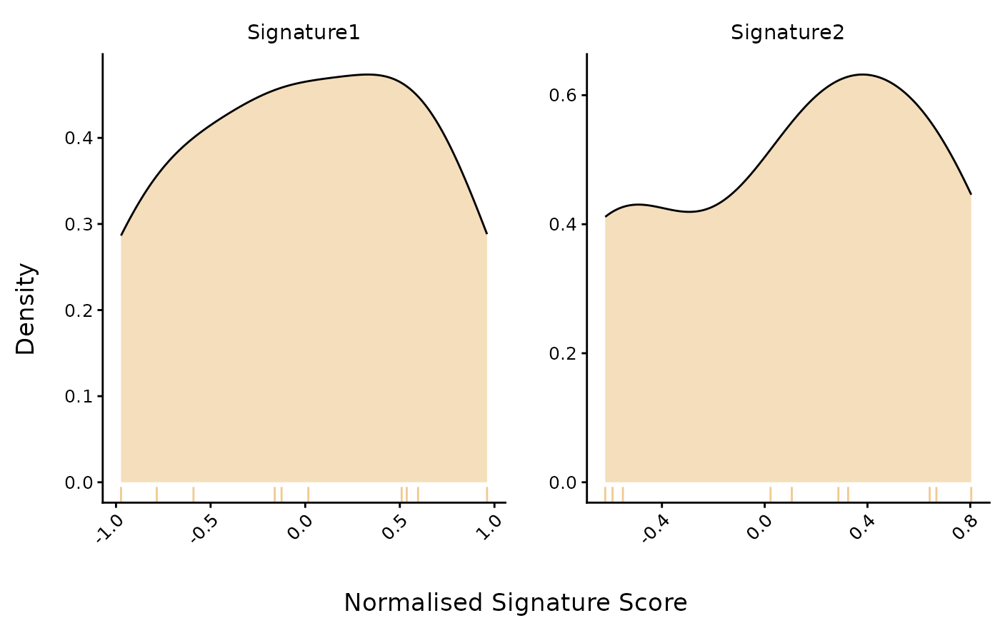
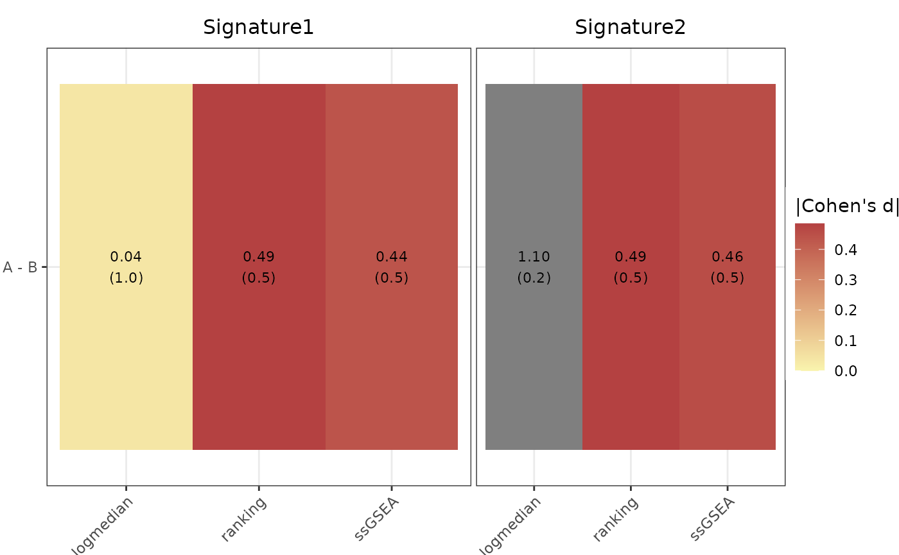
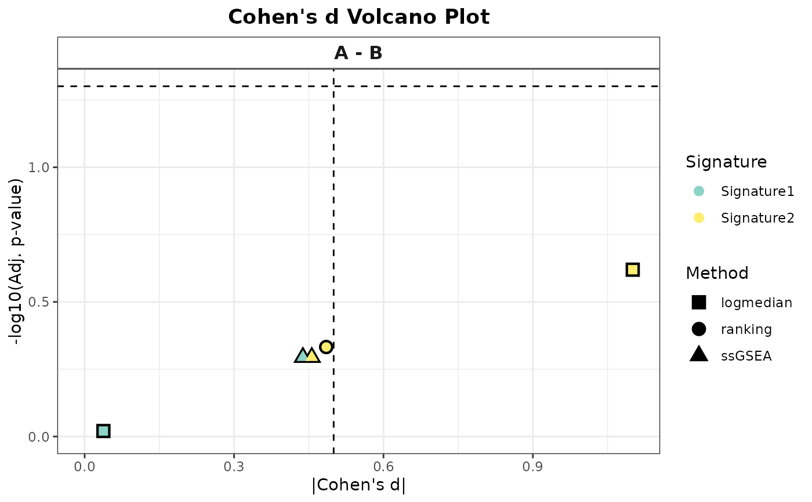

Computes and visualizes gene signature scores using one or more methods, returning plots such as scatter plots, violin plots, heatmaps, or volcano plots depending on inputs.
Usage
PlotScores(
data,
metadata,
gene_sets,
method = c("ssGSEA", "logmedian", "ranking", "all"),
ColorVariable = NULL,
Variable = NULL,
ColorValues = NULL,
ConnectGroups = FALSE,
ncol = NULL,
nrow = NULL,
title = NULL,
widthTitle = 20,
titlesize = 12,
limits = NULL,
legend_nrow = NULL,
pointSize = 4,
xlab = NULL,
labsize = 10,
compute_cohen = TRUE,
cond_cohend = NULL,
pvalcalc = FALSE,
mode = c("simple", "medium", "extensive"),
widthlegend = 22,
sig_threshold = 0.05,
cohen_threshold = 0.5,
colorPalette = "Set3",
cor = c("pearson", "spearman", "kendall")
)Arguments
- data
A data frame of Normalised (non-transformed) counts where each row is a gene and each column is a sample. Row names should contain gene names, and column names should contain sample identifiers. (Required)
- metadata
A data frame with sample-level attributes. Each row corresponds to a sample, with the first column containing sample IDs that match
colnames(data). Required ifmethod = "all"or if metadata-derived groupings or colors are used.- gene_sets
A named list of gene sets to score. For unidirectional gene sets, provide a list of character vectors. For bidirectional gene sets, provide a list of data frames with two columns: gene names and direction (1 = up, -1 = down). (Required)
- method
Scoring method to use. One of
"ssGSEA","logmedian","ranking", or"all"(default ="logmedian"). The"all"option triggers a full analysis returning both heatmap and volcano plots. Other values return single-score plots depending onVariabletype.- ColorVariable
Name of a metadata column to color points by. Used in single-method mode (
"ssGSEA", etc.). Ignored in"all"mode.- Variable
Metadata column to define groups or numeric comparisons. This is required if
method = "all"(used to compute and compare effect sizes). IfNULLandmethod != "all", density plots of each signature score across samples are shown (no grouping or comparison).- ColorValues
Optional. A named vector or list of colors used to control the coloring of plot elements across different methods and variable types. Behavior depends on the combination of
methodandVariable.If
method != "all", then:If
VariableisNULL, a single color will be applied in density plots (default:"#ECBD78").If
Variableis categorical, a named vector should map each level ofVariable(orColorVariable) to a specific color. This overrides the palette specified bycolorPalette.If
Variableis numeric, a single color is applied to all points in the scatter plot (default:"#5264B6").
If
method == "all", then:ColorValuescan be a named list with two elements:heatmap: a vector of two colors used as a diverging scale for the heatmap of effect sizes (default:c("#F9F4AE", "#B44141")).volcano: a named vector of colors used for labeling or grouping gene signatures (e.g., in the volcano plot).
If not provided, defaults will be used for both components.
In all cases,
ColorValuestakes precedence over the defaultcolorPalettesetting if specified.- ConnectGroups
Logical. If
TRUE, connects points by sample ID across conditions (used for categorical variables andmethod != "all").- ncol
Number of columns for facet layout (used in both heatmaps and score plots).
- nrow
Number of rows for facet layout (used in both heatmaps and score plots).
- title
Plot title (optional).
- widthTitle
Width allocated for title (affects alignment).
- titlesize
Font size for plot title.
- limits
Y-axis limits (numeric vector of length 2).
- legend_nrow
Number of rows for plot legend (used in single-method plots).
- pointSize
Numeric. Size of points in score plots (violin or scatter), used when plotting individual sample scores for both categorical and numeric variables, including when
method = "all".- xlab
Label for x-axis (optional; defaults to
Variable).- labsize
Font size for axis and facet labels.
- compute_cohen
Logical. Whether to compute Cohen's effect sizes in score plots (
method != "all"). This only applies whenmethod != "all"; ignored otherwise. If the variable is categorical andcond_cohendis specified, computes Cohen's d for the specified comparison. If the variable is categorical andcond_cohendis not specified, it computes Cohen's d if there are exactly two groups, or Cohen's f if there are more than two groups. If the variable is numeric, computes Cohen's f regardless ofcond_cohend.- cond_cohend
Optional. List of length 2 with the two groups being used to compute effect size. The values in each entry should be levels of
Variable. Used withcompute_cohen = TRUE.- pvalcalc
Logical. If
TRUE, computes p-values between groups.- mode
A string specifying the contrast mode when
method = "all". Determines the complexity and breadth of comparisons performed between group levels. Options are:"simple"performs the minimal number of pairwise comparisons between individual group levels (e.g., A - B, A - C). This is the default."medium"includes comparisons between one group and the union of all other groups (e.g., A - (B + C + D)), enabling broader contrasts beyond simple pairs."extensive"allows for all possible algebraic combinations of group levels (e.g., (A + B) - (C + D)), supporting flexible and complex contrast definitions.- widthlegend
Width of the legend in volcano plots (used only if
method = "all") and violin score plots.- sig_threshold
P-value cutoff shown as a guide line in volcano plots. Only applies when
method = "all".- cohen_threshold
Effect size threshold shown as a guide line in volcano plots. Used only when
method = "all".- colorPalette
Name of an RColorBrewer palette used to assign colors in plots. Applies to all methods. Default is
"Set3". IfColorValuesis provided, it overrides this palette. IfVariableisNULLandmethod != "all"(i.e., for density plots), a default color"#ECBD78"is used. Ifmethod = "all"(i.e., for heatmaps and volcano plots), a default diverging color scale is used:c("#F9F4AE", "#B44141"), unlessColorValuesis manually specified.- cor
Correlation method for numeric variables. One of
"pearson"(default),"spearman", or"kendall". Only applies when the variable is numeric andmethod != "all".
Value
Depending on method:
If method = "all", returns a list with heatmap and volcano ggplot objects.
If method is a single method, returns a single ggplot object (scatter or
violin plot depending on variable type).
Details
Behavior based on method:
For "all", the function requires metadata and Variable. It computes
scores using all available methods and returns a heatmap of Cohen's effect
sizes and a volcano plot showing effect size vs p-value across gene
signatures. Additional parameters include mode to define how contrasts
between groups are constructed, sig_threshold and cohend_threshold which
add guide dashed lines to the volcano plot (do not affect point coloring),
widthlegend controlling width of the volcano plot legend, and pointSize
controlling dot size for signature points in the volcano plot.
ColorValues can be a named list with heatmap (two-color gradient for
effect sizes) and signatures (named vector of colors for gene signatures
in the volcano plot).
For "ssGSEA", "logmedian", or "ranking", the type of Variable
determines the plot. If categorical, violin plots with optional group
comparisons are produced. If numeric, scatter plots with correlation are
produced. If Variable is NULL, density plots for each signature across
all samples are produced. Additional arguments include ColorVariable and
ColorValues for coloring control, colorPalette (overridden by
ColorValues if present), ConnectGroups to link samples by ID for
categorical Variable, cor to specify correlation method for numeric
Variable, pvalcalc to enable group-wise p-value calculations for
categorical variables, compute_cohen to calculate effect sizes when
applicable, and cond_cohend to focus Cohen's d calculation on a specific
comparison.
Behavior based on Variable type:
If Variable is numeric, scatter plots are output (in single-method mode)
with computed correlation (cor). Parameters compute_cohen,
cond_cohend, and pvalcalc are ignored. Color is uniform (default:
"#5264B6") unless overridden via ColorValues. Cohen's f effect size
estimation (compute_cohen = TRUE) and significance if pvalcalc is TRUE.
If Variable is categorical, violin plots are output (in single-method mode)
supporting p-value comparisons (pvalcalc = TRUE), optional connection lines
(ConnectGroups = TRUE), and Cohen's effect size estimation
(compute_cohen = TRUE) with significance (pvalcalc is TRUE). If
cond_cohend is specified, computes Cohen's d for that comparison. If not
specified, computes Cohen's d if 2 groups or Cohen's f if more than 2 groups.
Colors are matched to factor levels using ColorValues or colorPalette.
If Variable is NULL and method != "all", density plots of signature
scores are produced. A single fill color is used (default "#ECBD78" or
from ColorValues).
Examples
# Simulate positive gene expression data (genes as rows, samples as columns)
set.seed(42)
expr <- as.data.frame(matrix(rexp(60, rate = 0.2), nrow = 6, ncol = 10)) # values > 0
rownames(expr) <- paste0("Gene", 1:6)
colnames(expr) <- paste0("Sample", 1:10)
# Simulate metadata for samples with categorical and numeric variables
metadata <- data.frame(
sample = colnames(expr),
Group = rep(c("A", "B"), each = 5),
Age = seq(30, 75, length.out = 10)
)
# Define two simple gene sets
gene_sets <- list(
Signature1 = c("Gene1", "Gene2", "Gene3"),
Signature2 = c("Gene4", "Gene5", "Gene6")
)
# 1. Categorical variable: Violin plot (logmedian)
PlotScores(
data = expr,
metadata = metadata,
gene_sets = gene_sets,
method = "logmedian",
Variable = "Group"
)
#> Considering unidirectional gene signature mode for signature Signature1
#> Considering unidirectional gene signature mode for signature Signature2

# 2. Numeric variable: Scatter plot (logmedian)
PlotScores(
data = expr,
metadata = metadata,
gene_sets = gene_sets,
method = "logmedian",
Variable = "Age"
)
#> Considering unidirectional gene signature mode for signature Signature1
#> Considering unidirectional gene signature mode for signature Signature2
#> `geom_smooth()` using formula = 'y ~ x'
#> `geom_smooth()` using formula = 'y ~ x'
#> `geom_smooth()` using formula = 'y ~ x'
#> `geom_smooth()` using formula = 'y ~ x'

# 3. No variable: Density plot (logmedian)
PlotScores(
data = expr,
metadata = metadata,
gene_sets = gene_sets,
method = "logmedian"
)
#> Considering unidirectional gene signature mode for signature Signature1
#> Considering unidirectional gene signature mode for signature Signature2

# 4. All methods, categorical variable: Heatmap and volcano
# (Returns a list with $heatmap and $volcano elements)
all_plots <- PlotScores(
data = expr,
metadata = metadata,
gene_sets = gene_sets,
method = "all",
Variable = "Group"
)
#> Considering unidirectional gene signature mode for signature Signature1
#> No id variables; using all as measure variables
#> Considering unidirectional gene signature mode for signature Signature2
#> No id variables; using all as measure variables
#> Considering unidirectional gene signature mode for signature Signature1
#> Considering unidirectional gene signature mode for signature Signature2
#> Considering unidirectional gene signature mode for signature Signature1
#> Considering unidirectional gene signature mode for signature Signature2
# Print the heatmap and volcano plot if desired
print(all_plots$heatmap)

print(all_plots$volcano)
